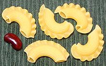
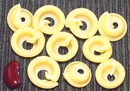
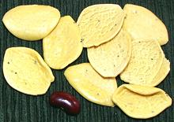
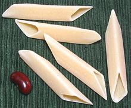

SAFARI
Users
Numbers:
The numbers given here are Clovegarden numbers and have no relation to Italian die numbers, which vary with manufacturer.Amorini
- [100; Little Cupids]The Cook's Thesaurus echoes The Complete Book of Pasta (P2) in saying it's a tiny soup pasta but neither provides a illustration of further information. All other evidence, including Italian pasta manufacturers indicate it is similar to or identical to Cavatappi, which is certainly not a soup pasta. I've found The Complete Book of Pasta a bit sloppy on some details, so I'm going with Cavatappi.
Ballerine
- Flowers - see Campanella.Bentagliati
- [116; "Well Cut"]A flat rectangular pasta cut in short lengths. The name is a play on Maltagliati, "badly cut", which is similarly flat but cut into rather random shapes.
Boccoli
- [158]Yet another twisted pasta, much like Trofie but shorter and thicker.
Bocconcini
- [128]Similar to Elicoidali but smaller in diameter, 0.378 inch diameter by 1.38 to 1.50 inches long with spiral ridges.
Calamarata
- [130; Small Calamari, Squid Rings]
Wide rings in appearance much like squid rings, thus the name. The photo specimens were 1.05 inch diameter and 1 inch randoms in length. Some manufacturers cut them a little shorter.
I find these very
convenient for using up leftover pasta stuffing. After boiling nearly
done, they stuff really easily. I set them on end in a baking dish,
with a little sauce over, or even just a drizzle of olive oil. I start
them in a 350°F oven covered with foil (with a little water in the
bottom if no sauce), then finish uncovered.
Calamari
- [129; Calamari, Squid Rings]This is a larger version of #130 Calamarata.
Campanelle
- [011; Gigli, Flowers]
One of the more decorative shapes, and very good at holding sauces. The
photo specimens were 1.22 inches long and 0.63 inch diameter.
Cannelloni
- [125; Cannelloni Zitoni]
These are one of the most common pasta tubes for stuffing. The photo
specimens are about 1.0 inch diameter by 4.03 inches long, though some
manufacturers make them a little shorter.
Canneroni
- [131]Sort smooth tubes, 0.57 inch diameter by 0.85 inch long.
Canneroni Grandi
- [152; Tufoli]Longer than regular Canneroni, 0.57 inch diameter by 1.6 inches long. More commonly known as Tufoli.
Capunti
- [352]
These pasta shapes were 1.95 x 0.40 inches. Product of Italy - durum
semolina, water.
Careroni Rigati
- [002]
Very small ridged tubes, 0.31 inch diameter by 0.88 inch long.
Casaricci
- 086; Cesariccia, Casarecce, House Curls]
This popular shape is "S" shaped in cross section. It is very good at
picking up sauces. I used these very successfully for buffet for use
with several sauces. They were cooked, lightly coated in extra virgin
olive oil and kept in a large slow cooker set to "keep warm". The
photo specimens were 1.75 inches long and 0.375 inch wide. A very
similar, but much longer, version is Strozzapreti
(Priest Strangler).
Cavatappi
- 100; amorini]
This is a fairly decorative shape and looks good on the plate. Best
for light to medium sauces. The photo specimens were 1.58 inches long
with a 0.48 inch spiral. The ridged tubes it is wound from are 0.22
inch diameter.
Cavatelli
Short pastas shaped rather like a hot dog bun. Be aware that the same name is also used for a small dumpling stuffed with ricotta cheese.
Cavatelli Murgiani
- [271 (bronze die)]
Regular Cavatelli are short and look like tiny hot dog buns. This one
looks like a bun for a foot-long hot dog. In any case, it'll scoop
up plenty of sauce. The photo specimens were 1.67 inches long, 4.35
inch wide.
Cellentani
- [021]
These are pretty much the same Cavatappi but
perhaps a little shorter.
Chiffera Rigati
- [003] Ridged elbows, typical of northern and central Italy. About 0.6
inch long by 0.18 inch diameter.
Ridged elbows, typical of northern and central Italy. About 0.6
inch long by 0.18 inch diameter.
Cigarette Rigate
- [279]
Medium ridged tubes cut square at the ends, similar to ziti but ridged.
The photo specimens were 0.37 inch diameter and 1.75 inch random
lengths.
Conchiglie
- [012; Medium Shells]
This the midrange of the many sizes this very popular pasta
comes in. It's scooped out shape enables it to pick up a large
amount of sauce, so it's good for sauces that have an adhesion
problem. The photo specimens were 1.01 inches long and around
0.67 inch across, but this will vary a bit with manufacturer.
Conchiglie
- [274; Large Shells, Tofette]
This is above the midrange of the many sizes this very popular
pasta comes in. It's scooped out shape enables it to pick up a large
amount of sauce, so it's good for sauces that have an adhesion
problem. The photo specimens were 1.19 inches long and around
0.80 inch across, but this will vary a bit with manufacturer.
Conchiglioni
- [054; Giant Shells]
Giant shells are popular for stuffing. The photo specimens were
2.8 inches long and 1.6 inches across. They were actually plain ones
from a bag of Tricolore shells. They are ridged, but they are so large
compared to the ridges that's hard to see in the photo.
Conchiglioni
- [254 bronze die; Giant Shells]
Giant shells are popular for stuffing. The photo specimens are an
artisinal brand, made using bronze dies. They were 2.5 inches long
and 1.3 inches across.
Conchigliette
- [273; Small Shells]
These shells are very small, but nowhere near the smallest they come.
Their scooped out shape enables it to pick up a large
amount of sauce, so it's good for sauces that have an adhesion
problem. The photo specimens were 0.44 inches long and around
0.41 inch across.
Creste de Gallo
- [004; Cock's Crests]
An interesting decorative shape, and a good sauce holder. but a
bit problematic for cooking. The tube will be well cooked by time
the root of the ruffle is done enough, so they end up with a double
texture. The photo specimens had a tube diameter of 0.32 inch and a
length of 1.34 inches.
Croxetti
A thin flat disk shaped Ligurian pasta stamped with the makers family crest on one side and some design on the other side. Generally about 1-3/4" in diameter.
Cuoricini 5 Color
- [295; Hearts]
These are extruded as a tube of hear shaped cross section and cut off
short. They are 0.75 inch from point to lobes, and 0.5 inch random
lengths. Ingred: durum wheat,
dehydrated spinach 2%, dehydrated beetroot 2%, red pepper sweet 2%,
dehydrated tomatoes 2%, turmeric 2%.
Dischi Volanti
- [263; Dischi, Messicani, Flying Saucers, UFO]
These are considered suitable for casseroles and salads. I have not yet
obtained them in Italian, so the photo specimens (#236) are Polish,
made from bread flour but using a standard Italian die. The main
visual difference would be color. These were typically 0.80 inch
diameter.
Ditali
- [063; Thimbles]
Smooth medium size tubes cut very short 0.35 inches diameter by
0.45 inches long. These are very often used in making pasta salads.
Actually, I prefer Ditali Regate (ridged ditali) when I can get it.
Ditali Rigate
- [250; Ridged Thimbles]
Ridged medium size tubes cut very short 0.33 inches diameter by
0.45 inches long. These are very often used in making pasta salads,
and I prefer these to the smooth version.
Ditalini
- [171; Tiny Thimbles]
Under magnification these proved to be ditalini rigate. The photo
specimens are very tiny, 0.19 inch long, 0.18 inch diameter. Good
particularly for soups.
Egg Noodles
In Italy, egg noodles are generally fresh noodles, especially since it's against the law to sell dried pasta made from anything but durum wheat and water.
Elbows, Tiny
- [270]
These exceptionally small elbows are fine for soups and salads. The
photo specimens were 0.46 inch across and 0.12 inch diameter.
Elbows, Small
- [272]
These small elbows are good for salads. I consider them better for
that usage than the common medium elbow. 0.59 inch across and 0.18 inch
diameter.
Elbows, Large
- [275]
These large elbows are favored by many for use in American Mac &
Cheese casseroles. The photo specimens were 1.09 inch across and 0.26
inch diameter.
Elicoidali
- [133; Spiral Rigatoni]
This is much like Rigatoni, except the ridges are spiral. I have found
this a good size for medium thick sauces. The photo specimens were
1.45 inches long by 0.45 inch diameter.
Fagioloni
- [134]narrow tubes about 1 inch long.
Farfalle
- [028; Butterflies, Bow Ties]
Available in various sizes. Shown are medium, 1.3 x 0.95 inches.
Small would be about 1.0 x 0.75 inches and large about 1-1/2"x1-1/8".
Watch these carefully during cooking. The pinch must not be chalky,
but needs to be distinctly chewy or the flat parts will be overcooked.
Farfalle Tricolor
- [249; Butterflies, Bow Ties]
These medium size bows are 1.3 x 0.95 inches. Ingred: durum wheat
semolina, tomato (1.3%), spinach (0.7%). special care in cooking is
the same as for regular Farfalle. They should be served with a simple
butter or oil sauce to preserve color.
Farfallone
- [099; Large Butterflies, Large Bow Ties]
This is the largest of the Butterflies, 1.65 inches long and 1.09
inches wide. Watch these carefully during cooking. The pinch must not
be chalky, but needs to be distinctly chewy or the flat parts will be
overcooked.
Fiorentine
- [112; Florence]
A complex shape made in Vinci, Tuscany. Similar to
Torchio but longer and considerably more complex.
The photo specimens were 0.75 inch across the widest point and 1.88
inches long.
Fiori
- [097]
This pasta is shaped as if composed of seven ridged tubes, one in the
center and six surrounding it. Shown here is the tricolore version with
spinach and tomato coloring. 0.63 inch diameter by 0.25 inch thick.
Foglie d'Autunno
- [118; Autumn Leaves]
Named for the colored leaves of Autumn, these elongated leaf shaped
pastas are dyed with up to 7 colors from natural herbs and
vegetables. Roughly 1-3/4 inches long and 0.63 inch wide.
Foglie di Carciofo
- [006; Artichoke Leaves]
Formed to resemble leaves pulled off an artichoke, these are rough and
concave on one side which will provide good sauce adhesion. The
manufacturer suggests serving with mascarpone cheese, quartered
artichoke hearts and toasted pine nuts. Ingred: durum semolina,
artichoke, poppy seed, water. The photo specimens were 1.40 inches
long by 0.80 inch across.
Fregola Sarda
- [120; Fregula]
"Sardinian Couscous" (0.09 to 0.15" diameter) is though by some to
be the ancestor of all Italian dried pastas. Sardinia maintained trade
with North Africa for much of its history, so this form may have been
brought from there, or taken from there to Africa. Unlike other Italian
pastas it is made from a coarser grind of semolina and is lightly oven
toasted.
Funghi
- [115, Mushrooms]Similar to Torchio but formed into the shape of a mushroom cap and stem.
Fusilli
- [031; Spirals]
In the form of an archimedes screw, typically with three fins. This
is a very popular pasta with very good sauce holding capability. It
is particularly good with plain butter and black pepper. 0.37 diameter
by 1.45 inches long (exact size varies with manufacturer).
Fusilli Avellinesi
- [106; Troffie]
Originally made by wrapping a cut strip of pasta around a bicycle
spoke. Always light color to resemble home made pasta. Often served
with Pesto, which it holds well. 2 inches long by 0.2 inch wide.
Pretty much identical to Troffie.
Fusilli Avellinesi 5 Color
- [294; Troffie]
This is a multi-color version of Fusilli Avellinesi,
0.22 inch diameter by 2.4 inch random lengths. Ingred: durum wheat,
dehydrated spinach 2%, dehydrated beetroot 2%, red pepper sweet 2%,
dehydrated tomatoes 2%, turmeric 2%.
Fusilli Bucati Corti
- [091; Spiralini, Tight wound springs]
These consist of a tubular pasta, similar to
Bucatini, wrapped in the manner of a
coil spring and cut short. It is wound with a much tighter pitch than
Fusilli Bucati Lunghi,
the full length version. The photo specimens were made from tubes about
0.12 inch diameter wound to a coil 0.34 inch diameter and 1.5 inches
random lengths. The name is from fuso, a spindle, because this pasta was
once made by wrapping pasta tubes around a rod or kinitting needle.
Gamelli
- [088; Twins]
These consist of two long thin tubes twisted around each other. They
are roughly 0.27 inches across the twist and 1.4 inches long. This is
a fairly common shape and an excellent choice when medium sauce
adhesion is needed.
Garganelli
Superficially these look like Penne, but the points are on the same side. It's made by rolling a pasta square diagonally into a tube.
Gigli
- see Campanella.Gnocchi
- [278]
A pasta named for the potato dumplings of the same name due to its
similar shape. Usage characteristics are similar to medium shells,
and they are sometimes called "shells". The photo specimens were
1.15 inch long and 0.68 inch wide.
Gnocchi Rigate
- [065]
A pasta named for the potato dumplings of the same name due to its
similar shape. Usage characteristics are similar to medium shells,
and they are sometimes called "shells". The photo specimens were
1.18 inch long and 0.63 inch wide. They are ridged in the same
direction as the lobes, but the ridges are tiny and don't show up
well in the photo.
Gnocchi Sardi
- [277; Malloreddus, Sardi, Gnocchetti Sardi]
In the north, Gnocchi are made from potatoes, but in Sardinia they are
made from durum wheat. Good with tomato or meat sauces. The photo
specimens were 0.81 inch long and 0.31 inch wide.
Gnocchi Sardi
- [070 (bronze die); Malloreddus, Sardi, Gnocchetti Sardi]
In the north, Gnocchi are made from potatoes, but in Sardinia they are
made from durum wheat. Good with tomato or meat sauces. The photo
specimens, extruded with a bronze die, were 0.68 inch long and 0.385
inch wide. These pastas are sometimes flavored with saffron.
Gnocchetti
- [067; Gnocchi Picoli]A smaller version of the Gnocchi pasta. 0.75 inch long, 0.50 inch wide.
Gomiti
- [135]Short "C" shaped tubes, ridged or not, similar to regular Elbows but a bit stubbier.
Gramigna
- [068]Small curls of pasta, curved like elbow macaroni but much longer compared to its diameter. They start almost gently curved at one end and curl fairly tightly at the other. Difficult to find outside Northern Italy and nearly impossible to find in North America.
Lumache
- [069; Small Snails, Small Pipes]
These are good to use with chunky sauces. The photo specimens were
0.75 inch long and 0.49 inch wide across the squished end.
Lumaconi
- [017; Snails, Pipes]
Boiled to just done, these are large enough to be stuffed using a
pastry pipe, then baked. 1.0 inch long by 0.75 inch wide.
Lumaconi, Giant bronze
- [248; Giant Snails, Giant Pipes]
Extruded through bronze dies, these have a rough texture that holds
sauces well. They are good for stuffing with a pastry pipe, then baking.
1.45 inch long by 1.25 inch wide.
Macaroni
This American spelling implies "Elbow Macaroni", by far the most popular tubular pasta in North America, particularly for "macaroni and cheese" casseroles. See also Maccheroni.
Maccheroni
Today, a generic term for any small tubular pasta, but back in the early days of pasta making it was the generic term for all of what we call "dried pasta" today. Of course, back then, it was mostly spaghetti. For U.S. usage see Macaroni.
Maccheroncelli
I cannot define this pasta for you, because there is no agreement among manufacturers except that it is hollow. It may be long, or short, or extruded or rolled, and may even be made out of egg pasta. The most common definition is long tubes about 0.18 inch diameter by 10 inches long.
Mafalde
- [046]A long ribbon or short pasta with ruffled edges, same as Mafaldine but larger.
Magliette
- [136]Here is another that has major disagreement as to what it is. The consensus is that it is a sort tube, but about twice as long and much less curved than Elbows. Others say it is a very short Penne Lisce.
Maltagliati
- [071]Meaning "poorly cut", this name is used for various pasta scraps or cuts that resemble them. Commercially, they may be elongated diamonds, or very short tubes cut diagonally.
Manicotti
- [062] These large ridged tubes are generally boiled almost soft and stuffed
with ricotta cheese and/or spinach or such and then baked. They may be
cut straight or diagonally at the ends. Diagonally cut units are
about 1-1/4" diameter by 4-1/2 inches long. Straight cut would be a
little shorter. These are more Italian-American than Italian. In
Italy "Manicotti" recipes are more commonly made by wrapping stuffing
in crepes, or in squares of fresh pasta.
These large ridged tubes are generally boiled almost soft and stuffed
with ricotta cheese and/or spinach or such and then baked. They may be
cut straight or diagonally at the ends. Diagonally cut units are
about 1-1/4" diameter by 4-1/2 inches long. Straight cut would be a
little shorter. These are more Italian-American than Italian. In
Italy "Manicotti" recipes are more commonly made by wrapping stuffing
in crepes, or in squares of fresh pasta.
Margherite
- [072; Daisy]Resembles a small shell more than it does a daisy.
Mezzani
- [138; Mezze Ziti, Perciatelloni, Regine, Scaloppi, Napoletan]medium pasta tubes, slightly curved, ridged or not. They are around 0.22 inch diameter and about 1.5 inches long.
Mezze Penne
- [296 (Lisce) 297 (Regate)] These are simply Penne Lisce and Penne Regate cut to half the usual length.Mezzi Rigatoni
- [301]
This is just like regular Rigitoni, but cut much shorter. The
photo specimens were 1.2 inches long by 0.66 inch diameter, but
other manufacturers cut shorter at about 1 inch.
Millerighi
- [159]
Medium size lengthwise ribbed tubes. 1.9 inches long by 0.66 inch
diameter. Also 1-3/4 x 0.78 inches.
Mista
- [096]A mix of similarly sized shapes.
Mostaccioli
- [143]
This is an angle cut tube pretty much the same as Penne Lisce (smooth
penne). They vary in size by manufacturer so I know of no definitive
difference between the two. The photo specimens were 0.33 inch diameter
and random lengths from 1.6 inches to 1.82 inches.
Nuvole
- [265]
These are short rectangles given a unique twist. I have not yet
obtained them in Italian, so the photo specimens (#264) are Polish,
made from bread flour but using a standard Italian Nuvole die. The
main visual difference would be color. These were typically 0.32 inch
thick, 0.8 inch wide and 0.7 inch long.
Orecchiette
- [032 (bronze die); Orecchiette Pugliesi, Little Ears of Puglia]A specialty of the "Heel of Italy", this pasta varies quite a bit in shape depending on how it's made. Ideally, they should resemble the hand made product, which is squeezed cup shape with the thumb. Made with a conventional extrusion die they are by necessity rectangular cups, but most are made by a more complex process and are roughly round.
The photo specimens were about 0.87 inch
long and 0.76 inch across. Just about all orecchiette sold claim to
be made using bronze dies, and many are rougher on the inside surface
than the photo specimens. I have always liked these in soup, but they
are more commonly used with sauces. Their cupped shape allows them to
carry quite a bit of even thin sauces, but the disadvantage is that
they tend to nest together in stacks.
Orecchiette 032a
For shame, Trader Joe's! Yes, I know, they were made in Italy, but these are the saddest excuse for orecchiette I've ever seen. They don't look like "little ears, they look like tiny condoms (condominiums?) that haven't been unrolled yet. The photo specimens were 0.80 inch in diameter and devoid of texture - no attempt whatever to make them look like hand made.
Orecchiette Baresi
[305]These are much like regular Orecchiette, but are squeezed to be a bit longer, are distinctly ridged on the outside and are quite deep. The photo specimens were 0.90 inch long, 0.67 inch wide and 0.390 inch deep.
Orecchiette Piccole
[306] These are much like regular Orecchiette, but significantly smaller (the
piccole part). The photo specimens were 0.62 inch diameter and 0.26 inch
deep.
These are much like regular Orecchiette, but significantly smaller (the
piccole part). The photo specimens were 0.62 inch diameter and 0.26 inch
deep.
O'Sole Mio
- [207; Suns ]A common whimsical shape. The photo specimens were 1.25 inches diameter and 0.43 inch thick.
Paccheri
- [141]A large smooth tube shaped pasta, usually about 1.0 inch diameter and 1-3/4 inches long, straight cut at the ends.
Paccheri Ondulati
- [210]These large tubes are Like Paccheri Rigati but with an undulating surface in place of ridges. The photo specimens, extruded through bronze dies, were about 1.1 inch diameter and 2 inch randoms in length.
Paccheri Rigati
- [286 bronze die]
This is the same as Paccheri, but with ridges rather than smooth.
The photo specimens, extruded through bronze dies, were 2.42 inches
long and 1.0 inch diameter.
Pansotti
- [196]Fresh pasta 2 inch squares stuffed and then folded corner to corner to form a triangle.
Pantacce
- [346] Smooth flat or wavy squares, 7-7/8 x 1-1/2 x 040 - size may vary.
These are often cut at an angle to form a rhomboid parallelogram. They
may also have two edges lightly or strongly rippled. Often associated
with Tuscany.
Smooth flat or wavy squares, 7-7/8 x 1-1/2 x 040 - size may vary.
These are often cut at an angle to form a rhomboid parallelogram. They
may also have two edges lightly or strongly rippled. Often associated
with Tuscany.
Pasta al Ceppo
- [144]Pasta tubes formed like a cinnamon stick
Penne Lisce
- [060]
Often called just "Penne" with no qualifier, this is the basic quill
pasta. Named for old fashioned quill pens, these smooth tubes are cut
diagonally at the ends. The photo specimens were 2 inches long and
0.375 inch diameter, but exact size varies with manufacturer.
Penne Mezzane
- [296 (Lisce) 208 (Regate)]
A thinner, shorter version of Penne, but bigger in diameter than
Pennette. There are smooth and ridged versions. The photo specimens
were 0.32 inch diameter by 1.8 inches long, actually the same size as
some other manufacturers' Penne Rigate, but I've also seen them as
small as 0.26 inch diameter and 1.5 inches long.
Penne Mezzanine
- [205]
A thinner, shorter version of Penne Mezzane, smaller than Pennette.
The photo specimens were 0.17 diameter by 1.38 inches long.
Penne Rigate
- [057]
This is one of the most useful of the tube shaped pastas for just
serving with sauce. Not too big, not too small, the diagonal cut ends
give it some character, and the ridges hold sauce well. The photo
specimens were 1.83 inches long and 0.320 inch diameter, but exact
size varies with manufacturer.
Penne Rigate Tricolore
- [143]
These are the same as regular penne rigate, but some of the pieces are
colored with natural ingredients. The photo specimens were 0.30 inch
diameter and 1.6 inches long. Ingred: durum wheat semolina, tomato
(less than 3%), spinach (less than 3%). Cooking is the same as for
regular Penne Rigate, but they should be served with a simple butter
or oil sauce to preserve color and flavor. The colorings do affect
flavor, particularly the spinach, but not strongly.
Penne Zita Rigate
- [280 bronze die]
This is pretty much the largest size of penne rigate. The photo
specimens, made with a bronze die, were 2.67 inches long and 0.59 inch
diameter.
Pennette
- [111]
These are the smaller version of Penne Lisce (smooth penne). The photo
specimens were 1.75 inches long, 0.22 inch diameter, but I've seen some as
small as 0.18 inch diameter by 1.65 inches long.
Pennette
- [324]
Another take on Pennette by the prestigeous De Cecco company. The
photo specimens were 0.22 inch diameter like #111, only 0.67 inch long.
Pennette Rigate
- [310 bronze]
These are the smaller version of Penne Rigate (ridged penne). The photo
specimens were 2.0 inches long, 0.28 inch diameter.
Pennini
- [146]Smaller diameter than Pennette, but longer, ridged or smooth.
Pennoni
- [007]
These very large penne are just within stuffing range, but are more
likely to be used with a chunky sauce in a casserole. The photo
specimens, extruded through bronze dies, were 2.46 inches long and
0.53 inch diameter.
Pipe
- [094]Also Pipette (smaller). Elbows very similar to or identical to Lumache. One end wide open, the other squashed almost closed.
Quadrefiore
- [074]A short pasta, squarish in cross section with four or more ruffled ridges lengthwise. More three dimensional than many pastas.
Racchette
- [325]
This is a "whimsical" shape by prestigeous pasta company De Cecco,
shaped like tennis rackets, 1.22 inches long, 0.60 wide and 0.017 inch
thick. Obviously these would be very good at picking light sauces and
holding them. De Cecco recommends serving with diced zucchini with an
onion and tomato.
Radiatori
- [075; Radiators]
These are a short pasta with prominent radial fins, making it resemble
an old fashioned room heater. They can hold a large amount of even a
rather thin sauce. The photo specimens were 1 inch long and
0.65 across the fins.
Reginelle
- [147]Tubes similar to Penne but longer and smaller diameter. See also next definition 102.
Riccioli
- see Campanella.Rigatoni
- [016]
These ridged tubes are one of the more popular midsize tubular pastas.
They are usually served with sauce. The photo specimens were 1.76 inches
long, 0.65 inch diameter, but size varies quite a bit with manufacturer.
Rigatoni Giganti
- [001]
These are oversize rigatoni extruded through a bronze die. They are
more than big enough to stuff using a pastry pipe. The photo specimens
were 2.00 inch long, 0.75 inch diameter.
Rotelle (1)
- Spirals, TwistsA pasta formed into a tight spiral resembling the augers used by post hole digging machines. It is similar to Fusilli which generally has a shallower pitch to its twist but the names are sometimes used interchangeably. .470 x 1-5/8".
Rotelle (2)
- see Ruote.Rotelle
- [092; Spirals, Twists]
This pasta spiral resembles the augers used by post hole digging
machines. It is similar to Fusilli but with a
tighter spiral and with two fins instead of three. The photo specimens
were 0.53 inch diameter and 1.78 inches long.
Rotini
- [077; Spirals, Twists]
A pasta spiral resembling the augers used by post hole digging
machines. It is similar to Fusilli but smaller,
with a tighter spiral and with two fins instead of three.
The photo specimens were 0.37 inch diameter and 1.2 inches long, but
I have examples as small as 0.31 inch by 1 inch.
Route
- [076; Ruotine, Route de Carro, Wagon Wheels]
This pasta, resembling a wagon wheel with spokes and a hub in the
center, is available in several sizes. It is good with chunky sauces.
Warning: this is a "brand sensitive" pasta, some brands fall
apart due to stresses caused by drying too rapidly. In any case,
don't overcook.
Sagnarelli
A flat pasta about 2" long by 3/4" with a saw-tooth edge all around.
Sardi
- see Gnochi Sardi.Sedani Rigata
- [253]Small pasta tubes with lengthwise ridges 0.33 inch diameter, 1.75 inches long.
Shells
- see Conchiglie.Spiralini
- [078; 079; Spirali (larger)]Spring shaped pasta looking like a thick spaghetti wrapped spirally around a straw. Twisted to a tighter pitch than Fusilli (2).
Stivaletti
- [179; "Little Boots"]These are similar to medium elbows, but are abut twice the length and much less curled, though the amount of curl varies with manufacturer. I have not found these in Los Angeles yet.
Strascinati
- [288; Petals]
A handmade appearing pasta from southern Italy, often served with a
simple tomato sauce, basil and shavings of ricotta salata
(salted ricotta - much firmer than tub ricotta).
photo specimens were roughly 1.55 inches long and 0.90 inches across.
and made strascinati are usually thicker and smaller, made by squishing
a small lump of dough with the tip of a knife blade, the pulling it off.
Strascinati Primavera
- [201; Colored Spring Petals]
This is the same as regular Stracinati. but in 5 colors to represent
spring colors. The photo specimens were roughly 1.55 inches long and
0.90 inches across.
Strozzapretti
- [259 (bronze die); 080 (Teflon die) Priest Strangler]
A flat strip curled on into an "S" shaped cross section to make it look
like a rolled up towel. Similar to Casarecci but longer at about 3.5
inches by 0.33 inch across. Then name is perhaps suggestive of an old
Italian method for handling the priestly child molestation issues we've
been dealing with recently. The photo specimens are extruded through
a bronze die for better sauce adhesion.
Succhielli
- [350]
These were 1.525 inch long by 0.525 across the fins. They are similar
to Radiatori but longer and without ruffles on the fins. They are
very good for holding sauces.
Tofette
- see ConchiglieTorchio
- [083; Torches]
This is a complex decorative shape that will also hold medium sauces
quite well. They are supposedly shaped like a torch, flaring wide at
one end and narrow at the other. The photo specimens were 0.78 inch
at the widest and 1.13 inches long.
Tortiglioni
- [123]Pasta tubes with spiral ridges similar to Elicoidali, 0.44 inch diameter by 1.89 inches long - at least according to top pasta maker De Cecco and most sites - some others say it is like fusilli.
Trivelli
- [209]A tube wound into a spring shape, just like Cavatappi but much shorter.
Trecce dell'Orto
- [119; "Garden Braids"]
Shorter than most pastas in this style, these were 0.28 inch diameter
by 1.75 inches long. They are yet another 5 color pasta formed from
a flat ribbon wrapped around a very thin spindle.
Trecce di Giulietta
- [117 "Braids of Juliet"]Short pasta twists. These are very similar to the Trecce dell'Orto above, but not colored.
Trenne
- [081; Triangular Penne]
Basically penne, but formed as a triangular rather than round tube.
The photo specimens, extruded through bronze dies, were 2.25 inches
long and 0.41 inch base to point.
Trennette
- [051]A hollow diagonally cut pasta with a triangular cross section, like Trenne (above) but smaller.
Trofie
- [090]
A Ligurian specialty often served with pesto. Clearly once made by
hand, by wrapping a flat strand of pasta a little narrower than
fettuccini, tightly around a wire. The photo specimens were 0.20 inch
diameter by 1.75 inch random lengths.
Trofie Colore
- [348]
A colored version of this Ligurian specialty once made by hand, by
wrapping a flat strand of pasta a little narrower than fettuccini,
tightly around a wire. The photo specimens were 0.20 inch diameter
by 1.5 inch random lengths. Durum Wheat Semolina, 2% or less of red
beet powder, silicon dioxide, turmeric dehydrated spinach, dehydrated
tomato.
Trofiette
- [106] Like Trofie, but even smaller.Trottole
- [247 bronze; Spinning tops]
This is one of the most complex shapes, very decorative on the plate.
It goes well with robust sauces, for instance, Trottole con salmi
di lepre (trottole with jugged hare sauce) or Trottole con
crema di vodka e gamberi (trottole with vodka cream & shrimp).
The photo specimens were 9.5 inches long and 0.58 inch diameter.
Tubetti
- [182]Very short smooth tubes, similar to #269 below except without ridges. These are used for salads and thicker soups.
Tubetti Mezzani Rigati
- [269; Ridged Short Medium Tubes]
I have used these quite successfully in pasta salads that have a sauce
with some adhesion. The photo specimens were 0.33 inch diameter and
0.39 inch long.
Tufoli
- [152; Canneroni Grandi]Large smooth tubes of medium length, 0.57 inch diameter by 1.6 inches long.
Umbricelli
A ribbon of pasta rolled along it's length into an "S" cross section. Similar to Casarecci but a little shorter at 1-3/4".
Ziti, Cut
- [122; Bridegrooms]
This smooth, tubular pasta is similar to penne lisce, but cut straight
at the ends rather than at an angle. They are often partially boiled,
then included with sauce in a casserole to be baked. The photo
specimens were 0.30 inch diameter and 1.75 inches long.
Ziti Rigati
- [153]Ziti with lengthwise ridges.
Zitoni
- [154]Ziti somewhat larger in diameter.
Zucchette
- [349]
These showed up in a market serving the Yuppie class around Halloween,
the name meaning "squash" in Italian. They were 0,9 inch diameter and
0.7 inch high. Supprisingly, they held together moderately if not
overcooked, but flavor was not outstanding. Made in USA. Ing: Enriched
durum flour, dehydrated butternut squash, paprika oleoresins.